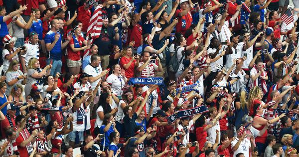
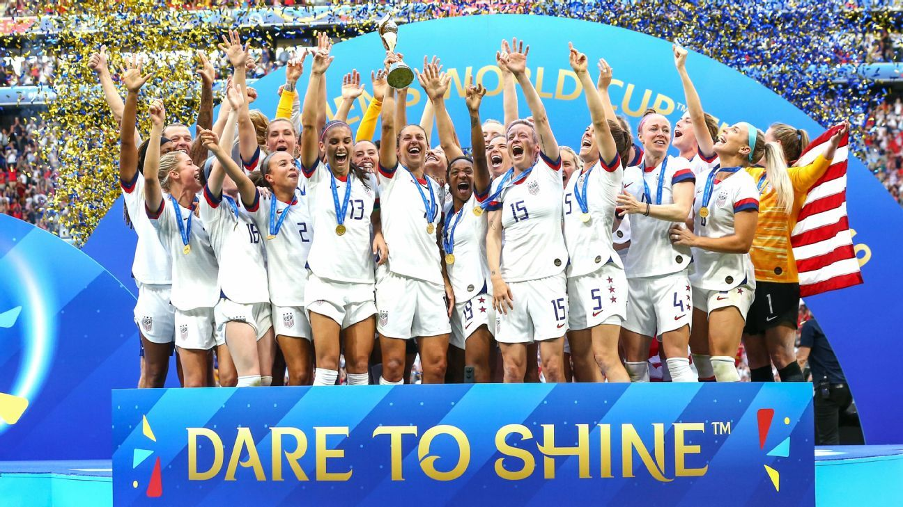
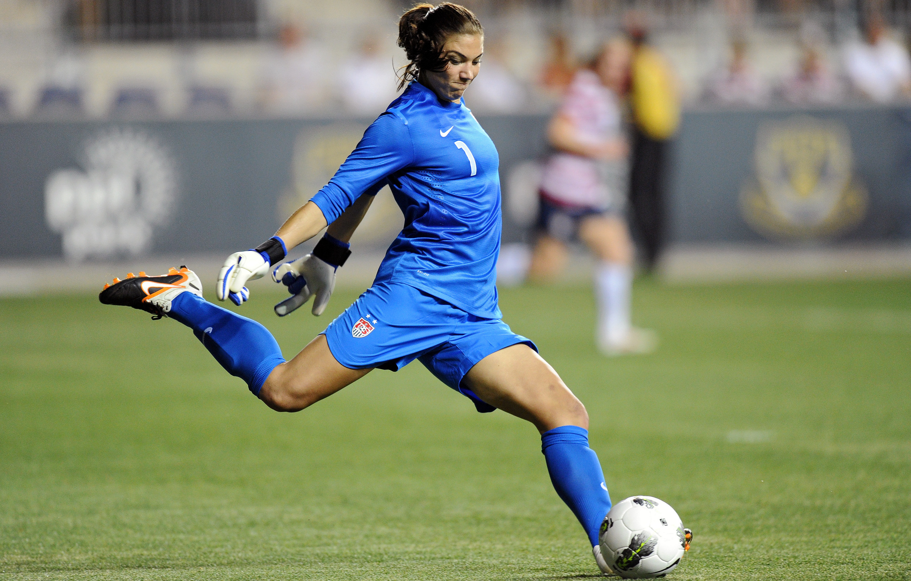
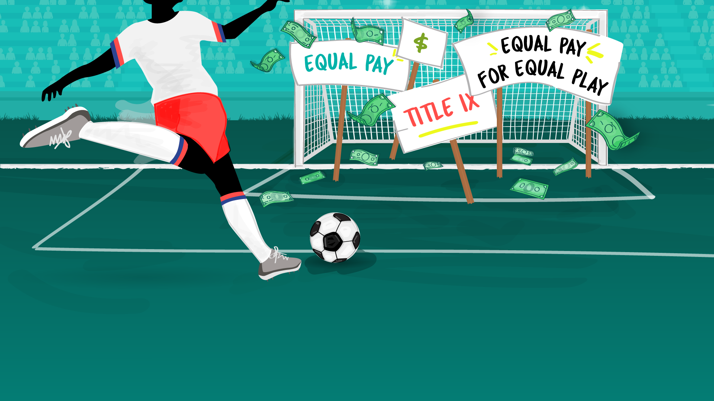

Education and information surrounding gender equality and equal rights has been on the rise, more accessible, and discussed by the broader community. As a young woman myself, I can’t remember a time from my adolescence where equality wasn’t an important topic of discussion being had around me.
Moving into my adult years, I have had the opportunity to critically analyze and reflect on my time growing up, both in and out of the realms of sport, and upon reflection have been able to see times where inequality was prevalent, both in my own and other’s experiences.
Most kids are encouraged to try most sports at least once. Sport provides a unique environment for kids to play, learn, get involved, and make friends that they otherwise would not have. But currently, despite the encouragement to get involved in sport, should a little girl choose to take her sport further one day and potentially pursue it as a career, the opportunities available are lacking when compared to those of her male counterparts in all but a few sports.
The debate around gender equality in sports remains a controversial topic, unfortunately. Even the founder of the modern Olympics, Baron Pierre de Coubertin, said in 1896, “No matter how toughened a sportswoman may be, her organism is not cut out to sustain certain shocks.”
Now we’ll be the first to say that the sporting industry is making steps towards an equal future. However, there is still a way to go. Sport has long mirrored society, so the discrepancy in equal pay between men and women has persisted within sport, just as it has in other professions.
2019 was a defining year in soccer for the conversation as the public showed their support for gender equality and in return we were provided with an insight from female athletes into the jobs and lives they must lead outside of their professional sporting career. The debate that had been simmering under the surface and was often confined as a topic of family barbeques or gatherings amongst friends, was ignited and reinvigorated globally in 2019 after the U.S. Women’s National Soccer Team (USWNT) won the World Cup and the crowd chanted “Equal Pay!”.
That same year, the Women’s Sport Foundation highlighted some of the women in sport leading the charge in the fight for equal pay. In advance of their World Cup win, the USWNT took a stand against ‘institutionalized gender discrimination’ against the team. The women’s team has performed exceedingly better than their male counterparts, who in 2018 failed to even qualify for the men’s World Cup. While the women have placed in the top three in every women’s World Cup since 1991 when the tournament began.
Looking to hockey, the U.S. Women’s National Ice Hockey Team, prior to their historic gold medal in the 2018 PyeongChang Olympics, were fighting for equal pay and treatment to that of the men’s team. The New York Times reported that at that time the women were barely scraping a living wage and were left out of pre-Olympic marketing plans despite their continued success as a team. Their star forward Hilary Knight said: “We’re passionately pursuing something for the greater good.”
One of the most well-known and on-going debates, even today in 2021, are the salaries of the WNBA and their NBA counterparts. It is known that most professional women basketball players, in order to make a sustainable income playing basketball, need to compete in numerous different national leagues. This creates an extreme physical demand on the athletes by not having an off-season as they are playing in Europe, Russia, China, and Australia to make ends meet. However, it is really important to note that the WNBA players are not asking for the multimillion-dollar figure incomes that their NBA counterparts receive, they are asking for percentage equity (more on this later).
Close to home, I remember having the conversation with one of my childhood friends who has gone on to play in the AFLW. We were discussing her training and game schedule, in and out of season, and I was shocked to learn that despite her and her teammates being required to train and play the same amount of times a week as their male AFL counterparts, they were being paid 20% of what their average male counterpart was earning per game, however they were not being paid a salary for training at all, meaning they all needed to sustain full-time jobs outside of their full-time training and playing schedule. Whereas their male counterparts are being paid as full-time athletes. In that same year, the AFLW Grand Final broke their attendance record with more than 53,000 fans rolling into the stadium to watch. It was also the biggest audience for a women’s sporting event in Australia, ever.
Women make up 40% of sportspeople, however as of 2020 they continue to only receive 4% of the total sports media coverage in print and broadcast devoted to them. This is even despite fluctuations during key events like the Olympics or World Cup.
Since media coverage has been demonstrated to directly impact a sport’s ability to attract and maintain commercial sponsorships, a lack of coverage can have a significant impact on the sustainability of female athletes, sports, and competitions. The 2017 Intergenerational Review of Australian Sport highlighted that in Australia only 8% of sponsorship is directed towards women’s sport and 7% of broadcast coverage.
According to the Women’s Sports Foundation, male athletes get $179 million more in athletic scholarships each year than females do. Additionally, collegiate institutions spend just 24% of their athletic operating budgets on female sports, as well as just 16% of recruiting budgets and 33% of scholarship budgets on female athletes.
According to the Australian Bureau of Statistics, the median full-time annual income for men that are classified as a sportsperson (includes athletes from all levels that earn money from their sport) is AU$67,652 (US$52,515). Women in this category earn AU$42,900 (US$33,301). That means on average female athletes are earning 63% of their male counterparts.
However, when we look at top-tier athletes, the pay gap is much larger. For example, in the soccer World Cup, if the Australian National Team, the Matildas, had won the entire competition, they would have received $4 million in prize money. That figure is just half of what the Socceroos earned for simply qualifying to play in the World Cup. However, it is also important to note that in 2019 under a new equal pay arrangement, the Matildas and Soceroos now receive an equal 24% share of an agreed cumulative of revenues generated by the National Team in 2019-20, rising by 1% each year.
Some people have the argument that “women’s sport isn’t interesting enough”. And even though over the years the popularity of women’s sports is growing, unfortunately the media coverage and sponsorship dollars haven’t necessarily followed through and gender equality remains an issue.
In 2015, the Women’s World Cup soccer final was the most watched soccer match—men’s or women’s—EVER in the US with nearly 25.4 million viewers. Yet the players were far less compensated than their male counterparts. Then, if we look again at the 2019 final, the women achieved a 22% higher viewership than the 2018 Men’s World Cup final.
Firstly, it’s important to ensure you and those around you are educated on what equal pay actually means. Equal pay means equal pay for the same amount of work under the same boss. The fight is asking for female and male athletes within the same level of teams, who have the same basic workload, responsibilities, and amount of matches, be paid the same basic wage by their sport’s governing body.
What it boils down to is that we all collectively, men and women, need to do more about gender equality. We need to pave the way for the next generation of girls and women, just as we do for boys and men. There should be no disparity in sports, in the workplace, or in life. All athletes should be seen as, and treated as, equals in all respects. Gender should not be the thing that defines us or separates us from our fellow athletes.
Let’s show the young girls everywhere that they can be whatever they want to be, and that they deserve to be paid equally for it too!
© 2021, Katie Maher